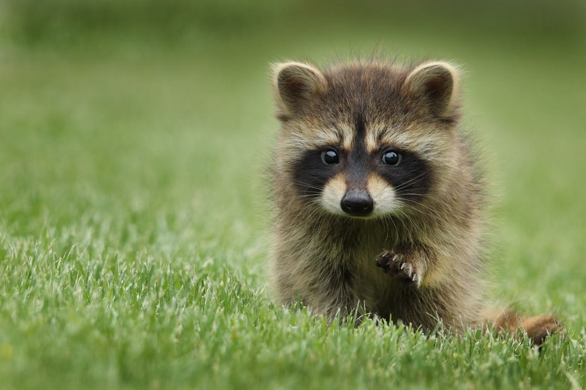

WEB
HTML
CSS
JavaScript
정은채
는
이쁘다 사랑스럽다 눈도 코도 입도 이쁘다
W3C 웹을 만드는 곳
네이버
네이버
네이버
네이버
네이버
네이버는 판교에 있고 판교 땅은 존나 비싸다.... 땅을 가지고 싶다.
 단락 발락 도시락 식도락 CSS기술 혁명적!! p 태그와 br 태그 p는 시각적으로 기능이 떨어짐 그래서 CSS를 통해 태그와 태그의 여백 나랏말사미 듕귁에 다라 문자와로 서로 사맛디 아니할세 태그의 부모 자식 관계가 있다 사이가 좋은 태그들 목차를 만들겠다